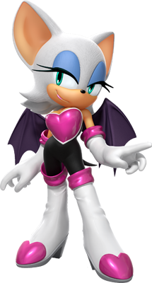

Летучая мышь Руж — персонаж из серии игр «Sonic the Hedgehog».
Она — антропоморфная летучая мышь и похитительница драгоценностей, работающая на полставки
правительственным шпионом для президента Объединенной
Федерации и агентом для G.U.N.. Всемирно известная
внештатная охотница за сокровищами, Руж имеет слабость к
драгоценным камням, таким как Мастер изумруд и изумруды
Хаоса, которыми она всегда одержима. Как шпион, летучая мышь
обучена рукопашному бою, скрытности и тихому
проникновению, и способно как наносить супер сильные удары, так и летать.

Вид: Летучая мышь
Пол: Женский
Возраст: 18 лет